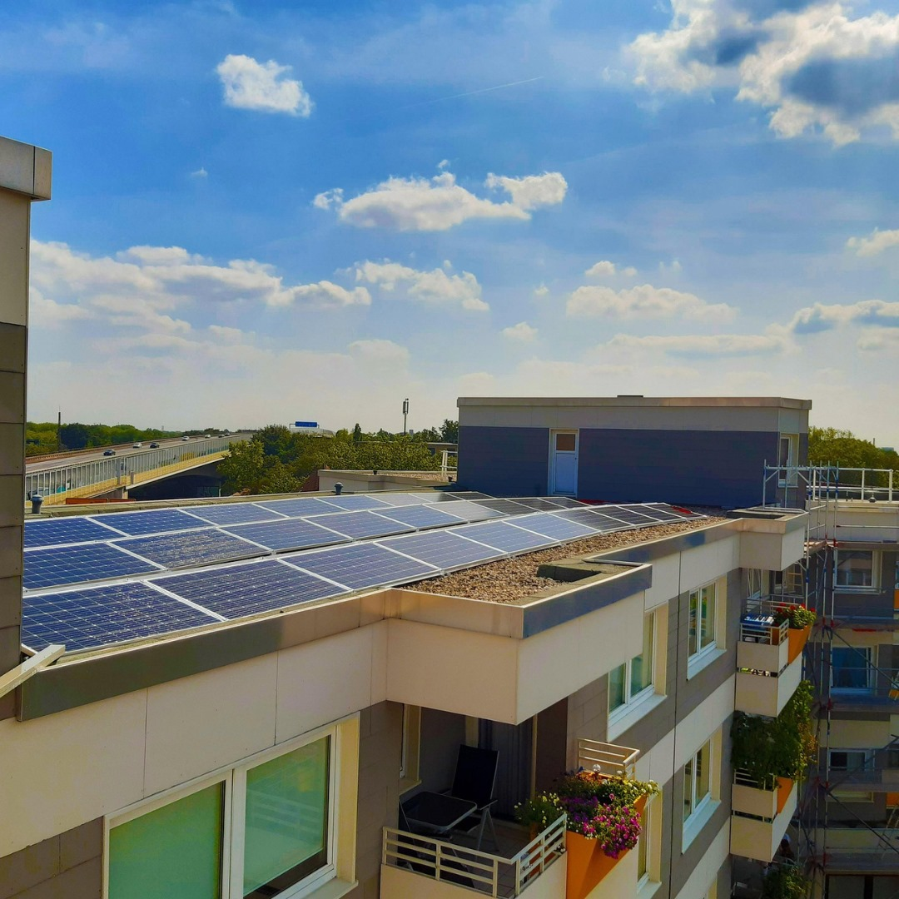

Energía Solar

¿Qué es?
La energía solar es la energía que aprovecha de forma directa la radiación solar. A pesar que
el Sol no tiene una vida inagotable se estima que la vida del Sol es de millones de años.
Distinguimos dos tipos:
- energía solar térmica: convierte la radiación del Sol en energía calorífica y se emplea para
producir agua caliente y vapor que se puede utilizar para accionar una turbina conectada a
un
generador eléctrico.
Otra forma de aprovechar la energía solar es a través de la energía solar térmica. Este método
utiliza la radiación solar para calentar un fluido, como agua o aceite, que luego se utiliza para
generar vapor y girar turbinas que producen electricidad.
Además, la energía solar térmica se puede utilizar para calentar agua en hogares y edificios,
reduciendo así la dependencia de combustibles fósiles para la calefacción y el agua caliente.
- La energía solar fotovoltaica: transforma la energía solar en electricidad mediante placas
fotovoltaicas.
Una de las formas más comunes de hacerlo es a través de la energía solar fotovoltaica.
Este proceso utiliza células solares, generalmente hechas de silicio, para convertir la luz solar en
electricidad. Las células solares contienen capas de materiales que tienen propiedades especiales:
cuando los fotones de luz solar golpean estas capas, liberan electrones, generando corriente
eléctrica.
Estos paneles solares se pueden instalar en techos de edificios, en áreas rurales o incluso en
grandes plantas solares, convirtiendo la luz solar en electricidad limpia y renovable.